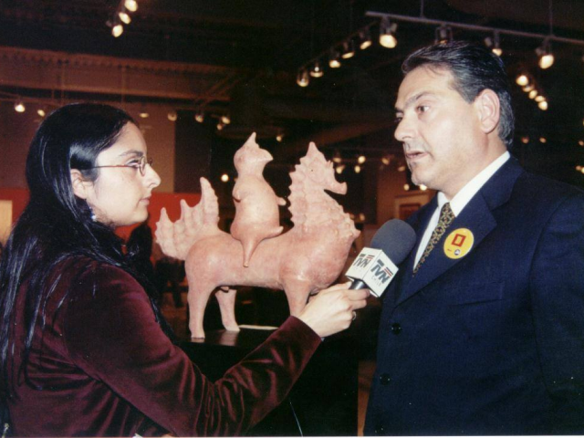

Un Preámbulo Necesario
El Directorio de la Corporación Teatro Pencopolitano con motivo de cumplirse 30 años desde que un grupo de vecinos formalizó la intención de construir un teatro apto para representaciones del mejor nivel escénico, acordó celebrarlo con: Presentaciones artísticas como una Convención Lírica y un musical con artistas nacionales y cubanos; con la confección de un Memorial Conmemorativo en reconocimiento a nuestros socios; instituciones y empresas colaboradoras, con el proyecto del Teatro Pencopolitano, hoy, Teatro Regional del Bío Bío y, muy especialmente, con la edición del libro “El Teatro Dormido”, con toda nuestra historia, los altos y bajos, para llegar a buen fin.
No sólo estuvieron los socios que participaron de una u otra forma, pagando sus cuotas y colaborando en trabajos concretos. Durante más de diez años, contamos con un equipo profesional abnegado y entusiasta que trabajó con un desempeño merecedor de los mejores elogios: Claudia Gómez, nuestra secretaria, hoy con familia formada en el Lago Ranco; Mónica Reyes y Alondra Álvarez, periodistas; Felipe Oliver, diseñador gráfico; Jeanette Bravo, contadora; Lucila Hormazábal, cobradora de cuotas de socios; Charly Méndez, asistente, y Pilar García, periodista y gerente, quien además es la autora de este libro y la desarrollara web del blog donde se puede leer digitalmente.
Además de ellos, hubo socios y socias que iban a nuestra oficina a cumplir funciones administrativas, como por ejemplo: Agnes Köbrich y Patricia Goetche, que se preocupaban de la contabilidad y otros temas administrativos. Lamentablemente, Agnes se unió a otros socios que ya no están entre nosotros, pero sus recuerdos permanecen vivos. Como pasó con directores tan comprometidos como Tito Ansaldo Benvenuto, Adriano Cecioni Raspi, Marcelo Contreras Hauser, el doctor Carlos Martínez Gaenzly, Eduardo Meissner Grebe, Carlos Von Plessing Baentsch y Eduardo Zuñiga Ivani. No cabe menos que recordarlos como primera cosa en la edición de este libro.
El directorio me pidió que, como presidente de la corporación, removiera todos los obstáculos para que el tema del libro fuese una realidad. Este texto no sería posible sin la participación directa de Juan Eduardo King Caldichoury, quien hace más de treinta años partió con la idea del teatro y lo impulsó hasta que se hizo realidad. Escribir la historia detrás de este logro, sin embargo, fue una tarea difícil. No contaré sus motivaciones para rehuir el trabajo que le pedía; quizás, se deduzcan en las páginas siguientes por leer.

Eduardo Meissner en una actividad con socios de la Corporación Teatro Pencopolitano en la Galería de Arte en Almacenes Paris.
Rodrigo Del Valle, presidente, Corporación Teatro Pencopolitano.
Decidimos inicialmente publicar este libro en formato digital a través de este blog, para que los lectores puedan acceder al contenido de manera instantánea desde cualquier lugar del mundo, además de permitirnos incluir diversos tipos de contenido multimedia, como videos, audios y enlaces que mejoren la experiencia. La retroalimentación obtenida será incorporada en una segunda edición, esta vez en formato impreso, cuyo lanzamiento se anunciará oportunamente.
Gracias,
Rodrigo del Valle García
Presidente
Corporación Teatro Pencopolitano